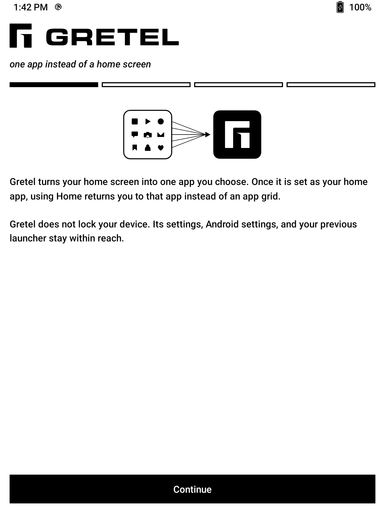
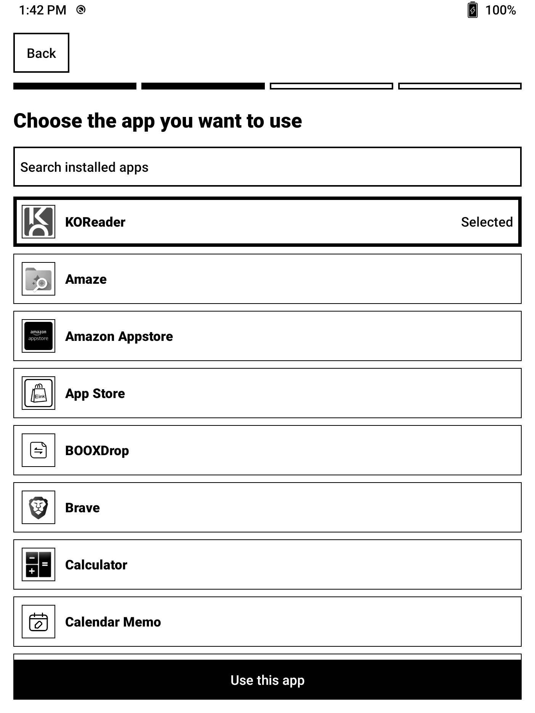

Gretel
The anti-launcher.
Your home screen is one app.
Every Android launcher hands you a grid of apps and asks you to choose again, every time you press Home. Gretel asks once.
Download the APK Source on GitHub


What it does
- One chosen app replaces the home screen. Your Home button or gesture opens it, every time.
- Your app stays in front. Gretel can bring it back after a restart or when the app exits. Both behaviors are optional.
- Settings are always within reach. Home twice quickly opens Gretel instead of your chosen app.
- Designed for e-ink. High contrast, large targets, no ripples, no unnecessary animation.
- Private by construction. No account, ads, analytics, network permission, or broad package visibility.
- Easy to undo. Choose another home app in Android settings, or uninstall Gretel like any other app.
Made for one-purpose devices
Gretel was built for e-readers, where a reading app such as KOReader should simply be the device. It works just as well on a spare phone or tablet you want to turn into a distraction-free reading, writing, reference, or dashboard tool.
Gretel is not a kiosk or parental-control app. It is intentionally reversible and does not use Device Admin, Accessibility, overlays, or lock task mode. If you need to stop someone from leaving an app, Gretel is the wrong tool.
Compatibility
| Android | 8.0 Oreo or newer |
|---|---|
| Architectures | Any. Gretel contains no native code. |
| Tested on | BOOX Nova Air, Android 10 |
| Package | com.abeant.gretel |
| Licence | Apache 2.0 |
Install
- Download
gretel.apkfrom Releases and open it on your device. If Android asks, allow your browser or file manager to install unknown apps. - Open Gretel and choose the app you want to use.
- Follow the prompt to set Gretel as your home app.
Home once returns you to your chosen app. Home twice quickly opens Gretel's settings.